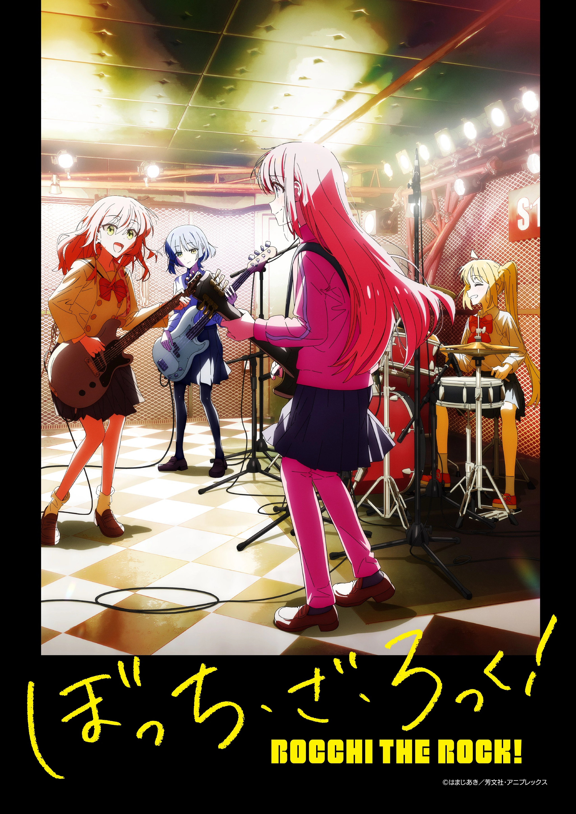
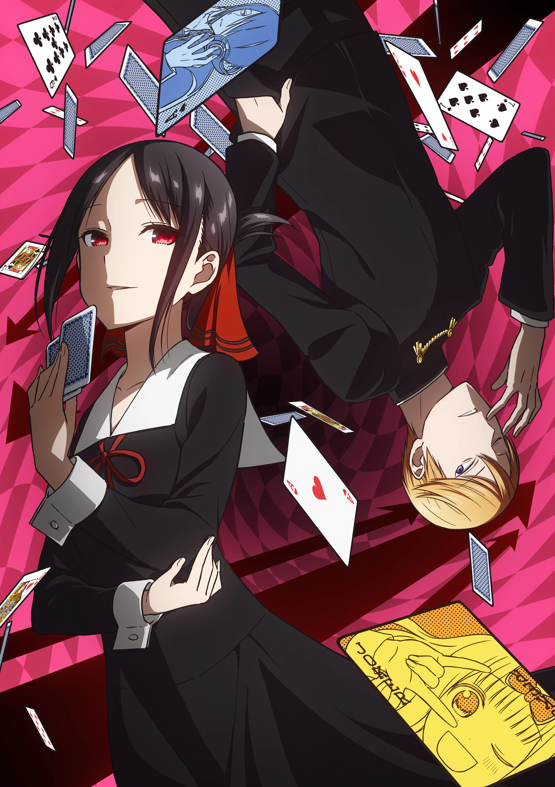
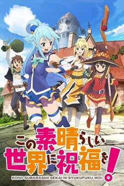
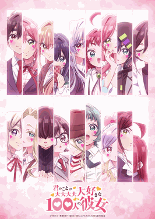
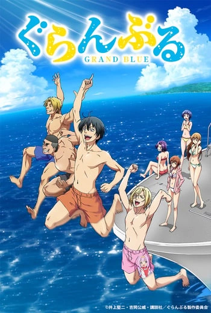

Hitori Gotoh is a very introverted and socially anxious pink haired girl who loves playing the guitar. She is one of the four members of the band Kessoku Band. The anime follows her and the band as they navigate the challenges of being in a band, and Hitori (Bocchi Chan as they call her) overcoming her social anxiety. Personally one of my favorite animes, amazing animation, music, and comedy. I also just relate a lot with the characters. Now, wheres season 2?
(UPDATE: MOVIE CONFIRMED!!!)

Kaguya Shinomiya (Vice President) and Miyuki Shirogane (President) are both students at the prestigious Shuchiin Academy. They both try to get the other to confess their love first, and try many ways to manipulate, trick, and outsmart each other. Though spoiler alert, it usually never works. One of the first animes I watched, and it was a great one to start with. The animation and voice acting are very good. Especially the openings and endings. It also aged very well, and is still one of the funniest animes I've watched. Im thinking that one day i will rewatch the entire series again.

Kazuma Satou, a shut-in gamer, who is isekai'd to a fantasy rpg like world after sacrificing himself in a accident, which didn't actually happen, he just died from shock. He, along with the (useless) goddess Aqua that he brought with him, the explosion mage Megumin, and the masochistic knight Darkness, go on many wacky adventures to maybe beat the devil king, and get rich. Im not a fan of isekai, but this anime is an exception, the comedy is amazing, the characters too. The voice acting, both in the sub and dub are perfect, and the animation and visuals are beautiful. My favorite comparison that i saw someone make was that it's like a DnD campaign, but the players are all idiots, while the DM is trying their best to keep it rolling like normal.

It's in the title, the main character, Rentarou Aijou, has 100 girlfriends that all love him, and he loves them all back. In this world, everyone has a soulmate, though, the Love God himself messed up and gave Rentarou 100 soulmates, and now he has to date all of them. If he doesn't, they will face a tragic fate. Each and every one of them is unique, following a different trope found in many anime. When I saw this anime, I was flabbergasted. I avoided it, because, why would anyone want to watch as 1 guy gets 100 girlfriends. Though when I did watch it, I was surprised, by how GOOD it was. Cute and wholesome characters, good comedy, good stories, good romance, and a great sub and dub. Just good everything, this ultimately wouldn't work if it weren't for Rentarou Aijou being the best boyfriend to ever live.

This is a diving anime, except it's not really about diving, like, at all. A college student, Iori Kitahara, moves to his uncles dive shop (Guran Buru/Grand Blue) to attend college. He joins the diving club Peek-a-boo which is hosted in the same location, though the club is more of a drinking club than a diving club. The anime follows him and his friends as they get into many wacky situations. Another anime where I was skeptical at first, but it turned out to be the funniest anime, no, funniest piece of media i've ever watched. Not a single episode was a miss, the comedy was perfect, loveable characters, and don't even get me started on the voice acting. It also had the strongest first episode of any anime i've watched, it was a perfect introduction to the series.
_